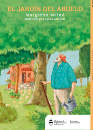
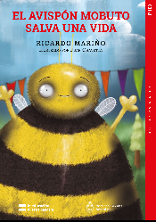
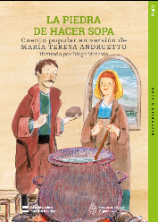

¿Qué nos proponemos con estas actividades?
En esta sección se presentan actividades que ejercitan distintos aspectos de lectura agrupados en tres niveles. Si bien todas las actividades tienen preguntas que apuntan a la localización, inferencia, correferencia y voces del relato, están agrupadas para poder ser aplicadas en distintos niveles de apropiación de los contenidos. No está indicado por grado, más allá que la publicación original le asigna una clasificación.
La idea de estas actividades es apuntar a la lectura autónoma y no a tal o cual grado.
Está basado en los libros de cuentos que enviaron a las escuelas y que también están en formato .pdf publicados en web.
Se irán agregando con estos y otros cuentos que tengan libre difusión en páginas relacionadas con educación.
Cuentos

El jardín del abuelo
Cuentos

El avispón Mobuto salva una vida
y más cuentos
